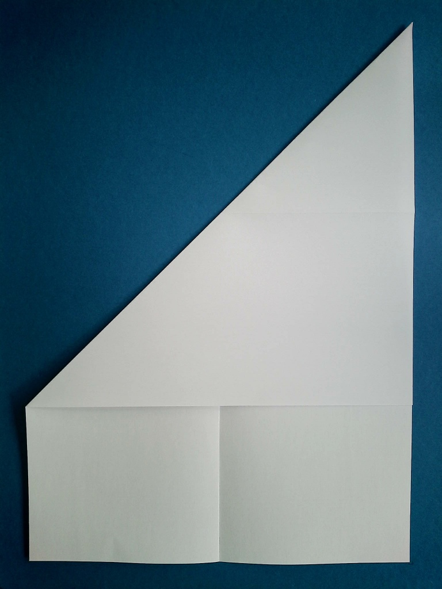
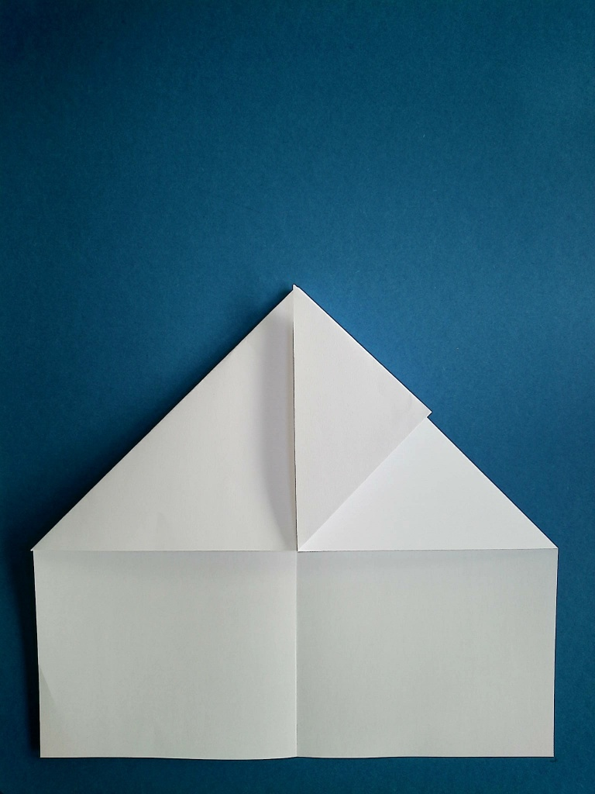

1
Lege das Papier hochkant vor dich hin.
2
Falte das Papier längs in die Hälfte.
3
Falte nun die linke und rechte obere Ecken jeweils auf die gegenüberliegende Seite. Falte das Blatt wieder auf. Es sollte, wie auf dem dritten Bild, ein Sternmuster erkennbar sein.

4
Im nächsten Schritt drücke die linke und rechte Faltkanten zur Mitte, sodass sich zwei Dreiecke nahezu deckungsgleich übereinander bilden.
5
Knicke nun die linke und rechte Spitze jeweils nach oben zur dritten Spitze. Es bildet sich ein Viereck

6
Falte nun dieselben Spitzen weiter zur unteren Ecke des Quadrats.
7
Jetzt knickst du die gesamte Spitze in der Mitte nach vorne um, wie auf dem Bild zu sehen ist.
Falte sie gerade umgenickte Spitze danach wieder zurück.
8
Falte nun jeweils die linke und rechte Spitzen nach oben zur Mittelfalz, sodass das Viereck zu einem Drachenflieger wird.
Falte auch diese Schritte jeweils zurück, sodass nur die Faltlinie zurückbleibt.
9
Wiederhole den vorherigen Schritt, aber falte die Spitzen stattdessen nach unten hin zur Mittelfalz.
Falte auch diese Schritte wieder auf.
10
Nun kannst du die obere und untere Faltlinien aus den letzten beiden Schritten gleichzeitg zur Mitte hinfalten.
Knicke diesen Teil nach oben um, wie auf dem Bild (für die rechte Seite) zu sehen ist.
Wiederhole dies für die andere Seite.
12
Nun kann du die Spitze zu dir hin umklappen wie auf dem Bild zu sehen ist.
13
Falte das Papier in der Mitte zusammen und drehe den Flieger nach rechts, sodass er wie auf der Abbildung aussieht.
14
Knicke jetzt die Tragflächen jeweils gerade bis zum Beginn der vorderen Spitze ab. Natürlich sollen beide Flügel deckungsgleich übereinander liegen.
15
Falte die Flügel wieder auf und nun ist der Habicht fertig. Viel Spaß beim Fliegen!